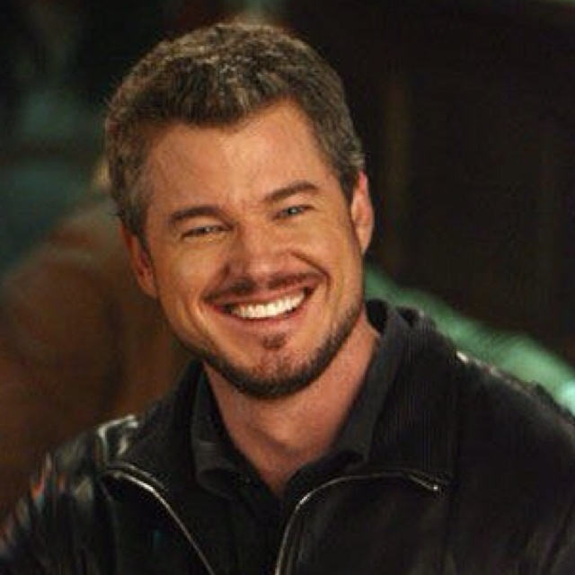

Mark Sloan
Mark Sloan, who is played by actor Eric Dane, was the head of Plastics of Grey-Sloan Memorial Hospital. The name for Grey-Sloan partially came from Mark after he passed due to injuries from a plane crash. Mark came into the show after being hired by Dr. Webber -- Chief of Surgery.
Sloan was Derek Shepherd's best friend. They hated each other at first because Mark was actually the man who Derek's wife cheated on him with. However, Mark and Derek ended up getting over their differences and became friends again.
While head of plastics, Mark was extremely good at his job. In some of his final seasons, he took Jackson Avery under his wing and they became what he liked to call "The Plastics Posse". Sloan and Avery became attached to the hip while working at the hospital. After Mark's passing, Jackson always remembered him and would mention him throughout the rest of his time on the show.
Mark, like Derek, always got around with a lot of women. However, Mark's true love ended up being Meridith's little sister, Lexie. Their relationship was very rocky, but they always ended up going back to each other. Lexie and Mark ended up passing away together due to the plane crash. After Eric's departure from the show, he made one guest appearance in season 17 in Meridith's "after life". In this appearance, he and Lexie were happily together. Eric Dane's former wife, Rebecca Gayheart, filed for divorce in 2018 due to their differences. Eric and Rebecca have two children, Billie and Georgia. The two parents have joint custody now over their children.